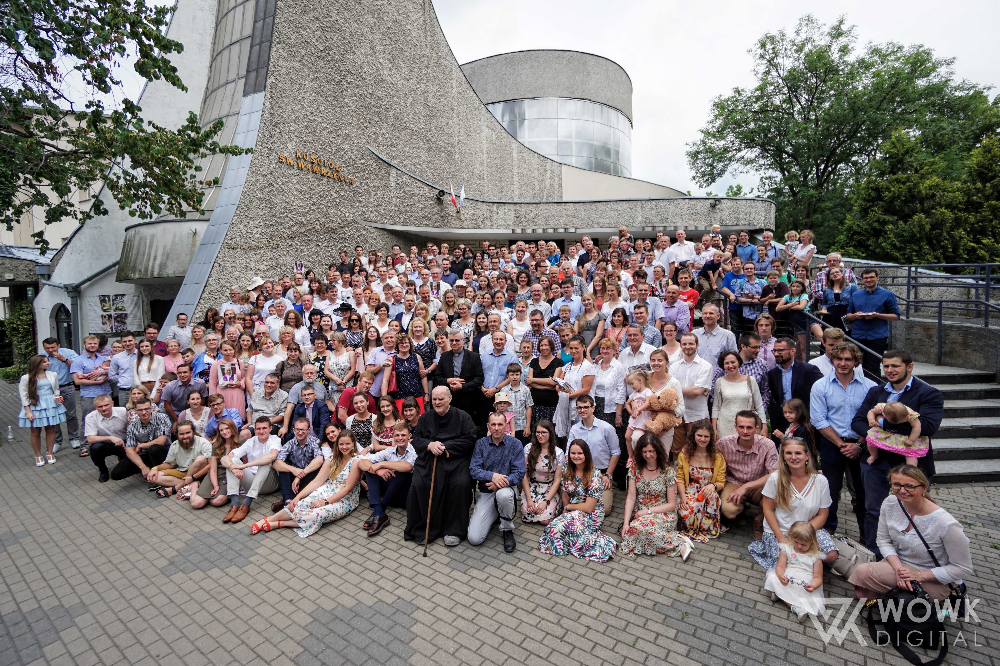

<!-- Sekcja O nas / Parasol Bezpieczeństwa -->
<div class="max-w-7xl mx-auto px-4 sm:px-6 lg:px-8">
    <div class="grid grid-cols-1 lg:grid-cols-2 gap-12 items-center">
        <div>
            <h2 class="text-3xl font-bold text-gray-900 mb-6 flex items-center gap-3">
                <i data-lucide="umbrella" class="w-8 h-8 text-primary"></i>
                Duszpasterski Parasol Bezpieczeństwa
            </h2>
            <div class="prose prose-lg text-gray-600 space-y-4">
                <p>
                    <strong>Stowarzyszenie Przyjaciół Duszpasterstwa Akademickiego „Wawrzyny”</strong> działa od 1995 roku. Dzięki temu Duszpasterstwo Akademickie Wawrzyny może zachowywać swoją niezależność, a jednocześnie mieć pewne i życzliwe wsparcie finansowe.
                </p>
                <p>
                    Duszpasterstwo istnieje od ponad 50 lat i od samego początku rozwija się dzięki ludziom – przyjaciołom i darczyńcom, którzy na różne sposoby włączają się w jego życie. Stowarzyszenie powstało właśnie z potrzeby serca: aby wspierać duszpasterstwo materialnie, ale też towarzyszyć mu w realizacji pomysłów i inicjatyw, które rodziły się i nadal rodzą we wspólnocie.
                </p>
                <p>
                    Od ponad 30 lat doświadczamy Waszego rzeczywistego wsparcia dzięki życzliwości wielu osób – poprzez darowizny, dawniej 1%, a od 2023 roku 1,5% podatku. Każda wpłata to coś więcej niż liczba – to konkretny gest dobra, który w naszej wspólnocie zamienia się w realną pomoc i rozwój.
                </p>
                <p>
                    Nie prowadzimy działalności gospodarczej. Utrzymujemy się wyłącznie ze składek członkowskich oraz dobrowolnych ofiar osób i firm, które nas wspierają. Wszystko, co robimy, opiera się na zaangażowaniu naszych serc.
                </p>
                <div class="bg-primary/5 border-l-4 border-primary p-6 rounded-r-lg my-6 shadow-sm">
                    <p class="text-gray-800 italic font-medium leading-relaxed">
                        Bardzo zależy nam na tym, aby nasza działalność stale przynosiła jak najwięcej dobra i pozwalała realizować w przyszłości cele zapisane w Statucie Stowarzyszenia. Z całego serca dziękujemy wszystkim Darczyńcom za zaufanie i wsparcie. To dzięki Wam możemy działać dalej.
                    </p>
                </div>
            </div>
        </div>
        <div class="relative">
            <div class="aspect-[4/3] rounded-2xl overflow-hidden shadow-2xl relative">
                
                <div class="absolute inset-0 bg-gradient-to-t from-black/60 to-transparent flex items-end p-8">
                    <p class="text-white text-xl font-medium">Tworzymy wspólnotę, wspieramy rozwój.</p>
                </div>
            </div>
            <!-- Elementy dekoracyjne -->
            <div class="absolute -bottom-6 -right-6 w-32 h-32 bg-primary/20 rounded-full blur-2xl -z-10"></div>
            <div class="absolute -top-6 -left-6 w-32 h-32 bg-primary/20 rounded-full blur-2xl -z-10"></div>
        </div>
    </div>
</div>
